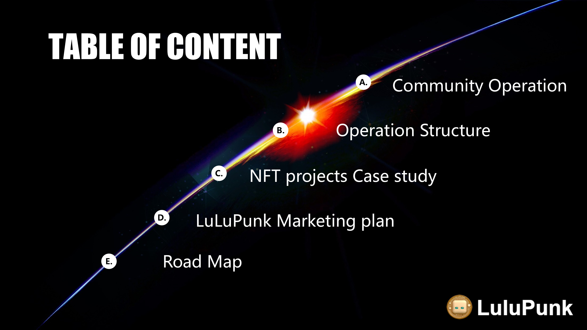
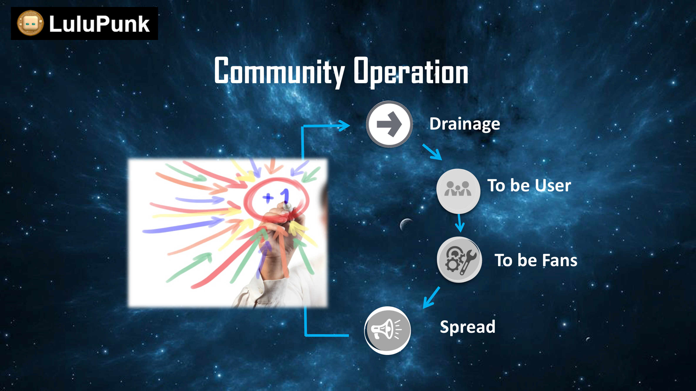
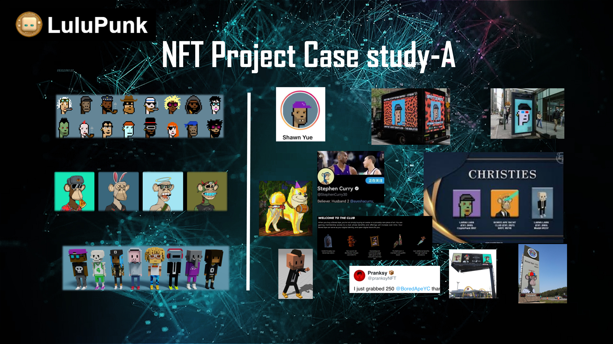
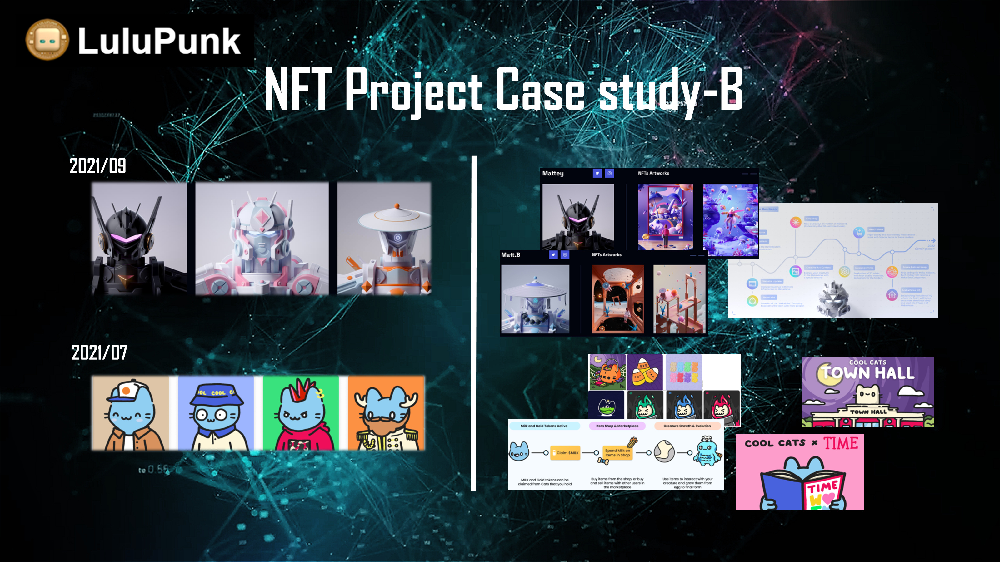
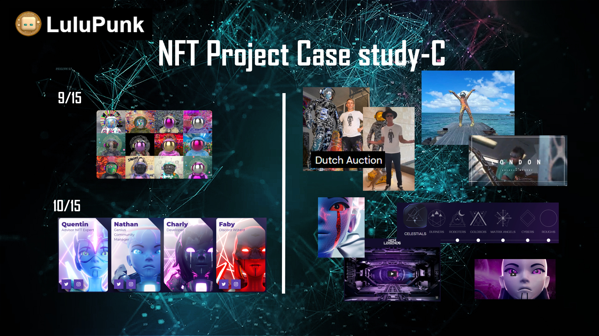
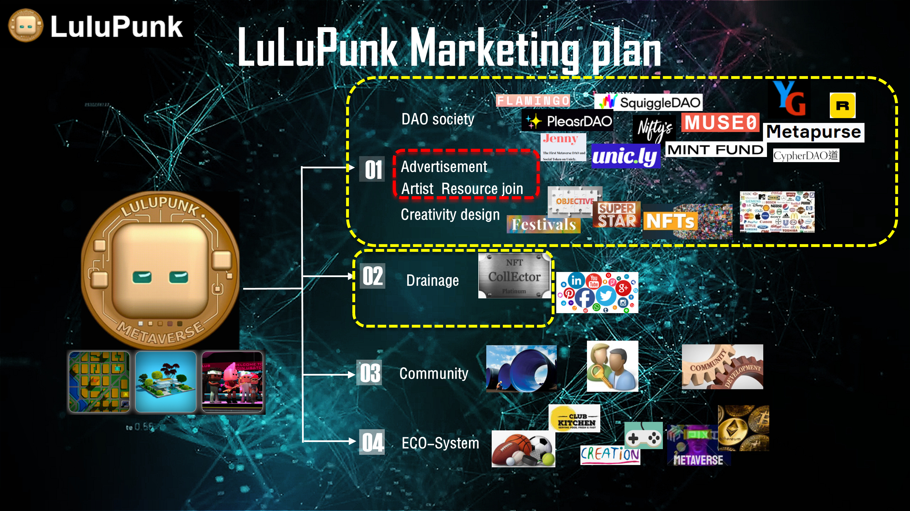

LuLuPunk — NFT × Metaverse 社群營運與行銷計畫（精簡版）
台灣區 Moderator · 2021–2022 · 以太坊鏈 · 已隱藏代幣與白名單細節
下載 PDF
1 / 13

2 / 13
3 / 13

4 / 13
5 / 13
6 / 13
7 / 13

8 / 13

9 / 13

10 / 13
11 / 13

12 / 13
13 / 13